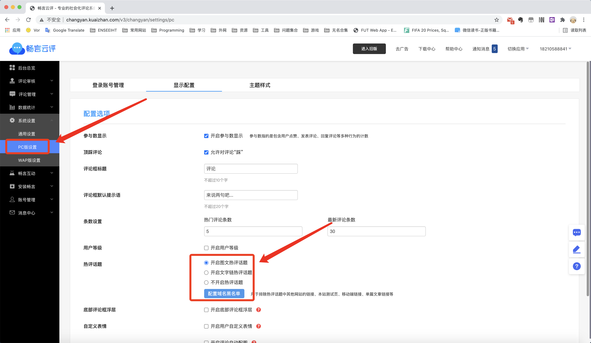

2020.9.23 修改字体
miho->css->_viriable.styl
修改中文字体为微软雅黑。
font-family = "Helvetica Neue", Helvetica, STHeiTi, Arial, sans-serif修改为
font-family = "Helvetica Neue", Helvetica, Microsoft YaHei, Arial, sans-serif2020.9.24 目录动态显示
miho->source->js->main.js
增大目录侧边栏出现时距离顶部的距离：增大控制目录出现的scrollTop / clientHeight比值。
设置目录侧边栏在滑动到接近文章底部时隐藏：文章底部和页面底部的距离为确定值，增加控制条件网页正文高度document.body.scrollHeight和滑动高度scrollTop的差值大于特定值时才出现目录。
showToc: function (scrollTop) {
if (scrollTop / clientHeight >= 0.4 && $(window).width()>1050) {
$(".post-toc-name").css("display","block");
toc.removeClass("post-toc-top");
toc.addClass("post-toc-not-top");
} else {
toc.removeClass("post-toc-not-top");
toc.addClass("post-toc-top");
}
},修改为
showToc: function (scrollTop) {
// 网页正文全文高
var bodyHeight= document.body.scrollHeight
if (scrollTop / clientHeight >= 0.5 && bodyHeight-scrollTop>=1400 && $(window).width()>1050) {
$(".post-toc-name").css("display","block");
toc.removeClass("post-toc-top");
toc.addClass("post-toc-not-top");
} else {
toc.removeClass("post-toc-not-top");
toc.addClass("post-toc-top");
}
},2020.11.20 收款码
miho->source->images
刚更新支付宝和微信支付的收款二维码。
2020.11.24 字体大小
miho->source->css->_extend.styl
之前修改过的正文内容标题字体大小补录。
$base-style
h1
font-size: 2.5rem
h2
font-size: 2.0rem
h3
font-size: 1.5rem
h4
font-size: 1.2rem
h5
font-size: 1rem
h6
font-size: 1rem2020.11.25 畅言id
评论功能畅言云评的设置修改。
http://changyan.kuaizhan.com/setting/common/isv-mgr
站点地址错误，删除地址，重新添加。
并且获取畅言新推出的去广告的lite版。
复制新生成的appid和appkey进行替换。
miho->_config.yml
# 畅言，输入appid和appkey
changyan_appid: cytzSxwzh
changyan_appkey: 5280c2cb8d655a130b0308fcb528f675# 畅言，输入appid和appkey
changyan_appid: cyvaQ34l4
changyan_appkey: dfbc2f31fdc91ffc75e2035195b4426d2020.12.9 访客数和访问量显示
更改底部的访客数和访问量统计显示，中间加一个｜。
miho->layout->_partial->sites->visit.ejs
<% if (theme.access_counter.on) { %>
<p>
<span id="busuanzi_container_site_uv" style='display:none'>
<%- theme.access_counter.site_uv %><span id="busuanzi_value_site_uv"></span>
</span>
<span id="busuanzi_container_site_pv" style='display:none'>
<%- theme.access_counter.site_pv %><span id="busuanzi_value_site_pv"></span>
</span>
<div class="theme-info">
</p>
<% } %>
修改为：
<% if (theme.access_counter.on) { %>
<p>
<span id="busuanzi_container_site_uv" style='display:none'>
<%- theme.access_counter.site_uv %><span id="busuanzi_value_site_uv"></span>
</span>
|
<span id="busuanzi_container_site_pv" style='display:none'>
<%- theme.access_counter.site_pv %><span id="busuanzi_value_site_pv"></span>
</span>
<div class="theme-info">
</p>
<% } %>2021.2.3 代码高亮
更改博客的代码高亮样式。
2021.4.13 畅言取消热评话题显示
打开文章页面，加载过慢，Network监测发现是畅言热评加载图片资源的锅，于是关掉。

改为不开启。
最后更新： 2022年02月19日 17:10
原始链接： http://vor.ink/2020/09/23/Blog%E6%9B%B4%E6%96%B0%E8%AE%B0%E5%BD%95/